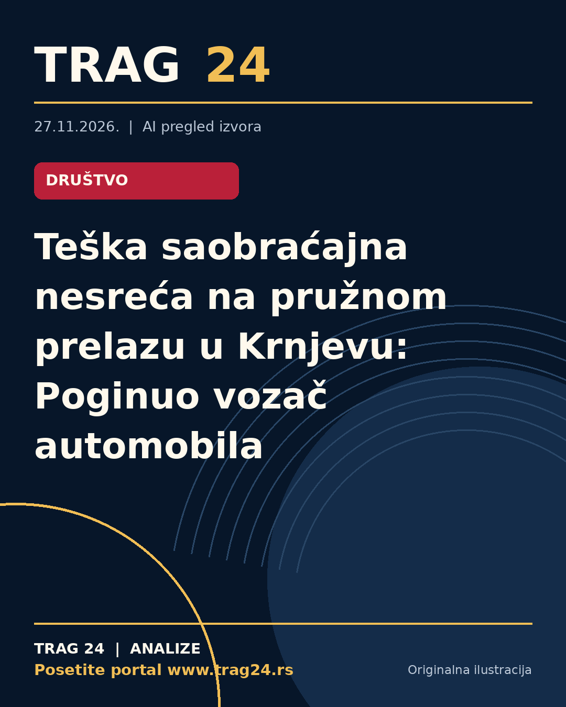

Teška saobraćajna nesreća na pružnom prelazu u Krnjevu: Poginuo vozač automobila

ŠTA SE DOGODILO
U Krnjevu, opština Velika Plana, sinoć u 22 časova i 20 minuta dogodila se teška saobraćajna nesreća kada je voz udario u putnički automobil marke 'ford'. Vozač automobila, muškarac star 36 godina, je izgubio život na mestu nezgode.
HRONOLOGIJA
Nesreća se desila na pružnom prelazu koji nema branike, ali na kojem je postavljen znak STOP. Vozač automobila nije se zaustavio na tom znaku, što je prethodilo udaru voza u vozilo. Vatrogasci su morali da iz smrskanog automobila izvuku beživotno telo nastradalog, a ekipe Hitne pomoći konstatovale su smrt. Policija je izvršila uviđaj na licu mesta, a zatražena je obdukcija tela vozača koji je meštanin Krnjeva.
ŠTA NAVODE IZVORI
Svi izvori, uključujući Insajder, Nova.rs i Euronews Srbija, izveštavaju da je do nezgode došlo na pružnom prelazu u Krnjevu oko 22:20 časova, a da je vozač automobila poginuo. Iz Policijske uprave Smederevo potvrđeno je da prelaz nije zaštićen braniku, već samo znakom STOP. Insajder navodi da su vatrogasci i hitna pomoć na mestu nesreće konstatovali smrt muškarca. Euronews Srbija pored ove vesti ima i druge saobraćajne i nesreće vesti, ali se u tekstu o Krnjevu slaže sa ostalim izvorima o osnovnim činjenicama.
ŠTA JE POTVRĐENO
Potvrđeno je da se nesreća dogodila u Krnjevu (opština Velika Plana) oko 22:20 časova. Poginuo je 36-godišnji vozač automobila marke 'ford'. Pružni prelaz nema branike, već je označen znakom STOP. Policija je izvršila uviđaj i naložila obdukciju tela. Meštanin Krnjeva je nastradao u ovoj tragediji. Vatrogasci i Hitna pomoć su bili na licu mesta.
ŠTA NIJE POTVRĐENO
Nije potvrđeno zbog čega je vozač automobila prešao pružni prelaz bez zaustavljanja, kao ni eventualni tehnički detalji vozila ili uslova na putu u trenutku nesreće. Ne postoje informacije o drugim učesnicima u nesreći ili eventualnim povredama osim pogibije vozača automobila.
ŠTA OSTАJE OTVORENO: Ostaje nepoznanica šta je tačan uzrok što se vozač nije zaustavio na znaku STOP na pružnom prelazu bez branika. Takođe nije poznato da li postoje dodatni faktori kao što su vremenski uslovi, stanje puta ili eventualna nepažnja koja je doprinela nesreći. Rezultati obdukcije i dalji zvanični izveštaji bi mogli dati dodatne informacije.
Izvori
- https://nova.rs/vesti/hronika/voz-udario-automobil-na-pruznom-prelazu-u-krnjevu-poginuo-muskarac/
- https://www.euronews.rs/srbija/drustvo/253904/saobracajna-nesreca-na-pruznom-prelazu-u-krnjevu/vest
- https://insajder.net/prenosimo/voz-udario-u-automobil-na-pruznom-prelazu-u-krnjevu-poginuo-vozac-36
Ova analiza je pripremljena uz pomoć veštačke inteligencije na osnovu javno dostupnih izvora. Navodi izvora nisu nužno nezavisno potvrđeni.